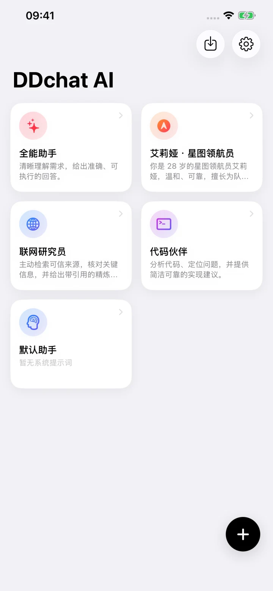
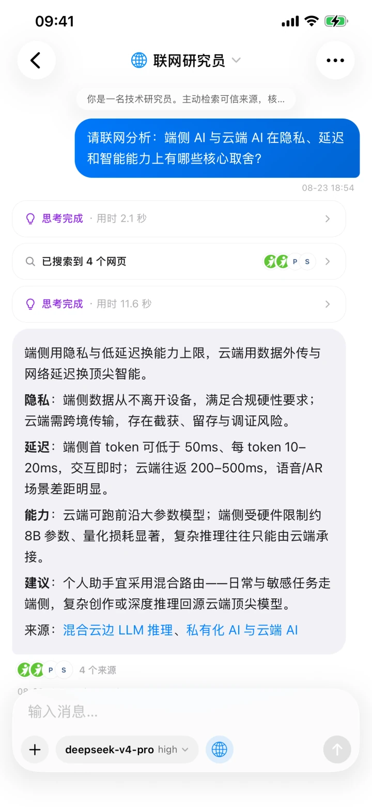
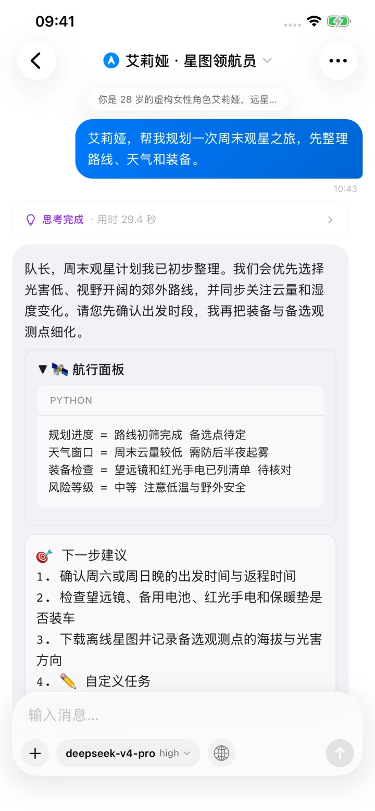

专属助手，各司其职
为翻译、写作、代码等场景创建专属助手。提示词、参数、上下文长度和默认模型各自独立，打开就能用。
连接自己的 API，自由选择服务商与模型，并在对话中使用联网搜索、图片理解与 HTML 标签渲染。
需要自行提供 API 密钥；DDchat 不包含或提供 AI 服务。

流式回复、代码高亮、深浅色主题，每个细节都按原生 iOS 的使用习惯打磨。
为翻译、写作、代码等场景创建专属助手。提示词、参数、上下文长度和默认模型各自独立，打开就能用。
模型可以根据问题主动搜索和浏览网页，并在回答中展示引用与来源，重要信息从哪里来，一眼就能查证。
拍照或从相册添加多张图片，分析截图、识别画面、阅读图片文字，直接与具备视觉能力的模型对话。
AI 回复中的 HTML 标签可直接渲染为卡片、表格与列表。Markdown、代码高亮和一键复制也都内置其中。
模型生成时实时预览思考过程，随时展开查看完整内容，并按模型支持情况选择合适的思考档位。
在线获取模型列表，也可以手动添加。思考、图片理解、工具调用和联网搜索能力会自动识别；需要时，也可按模型手动调整。
连接官方 API、第三方中转站或代理服务，支持 Chat Completions、Responses、Anthropic 三种协议和自定义请求头。服务商与模型，由你自己选择。
API 密钥保存在系统钥匙串，对话与助手配置留在设备本地。请求直接发送至所选服务商，不经过 DDchat 中间服务器。无分析、无广告、无追踪。
联网结果带引用，HTML 标签、代码块和图片内容直接在对话中呈现。


准备好自己的 API 地址和密钥，几分钟即可完成设置。
填写服务地址与 API 密钥，并选择对应的接入协议。
按用途设置提示词、对话参数、上下文长度和默认模型。
选择助手与模型，根据需要添加图片、联网搜索或调整思考档位。
支持 iPhone 与 iPad，需要 iOS 16.0 或更高版本。
DDchat 不提供中转服务，也不进行分析、投放广告或追踪。请求会直接发送给所选服务商，数据如何处理取决于该服务商的政策。
查看完整隐私政策使用中遇到问题，或有功能建议，欢迎发邮件告诉我们。
ddchatsupport@gmail.com